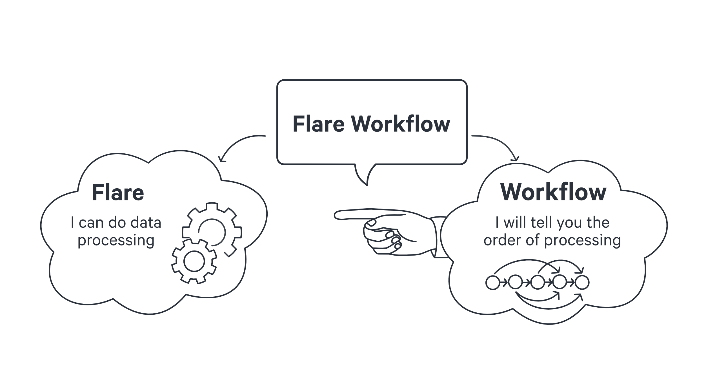
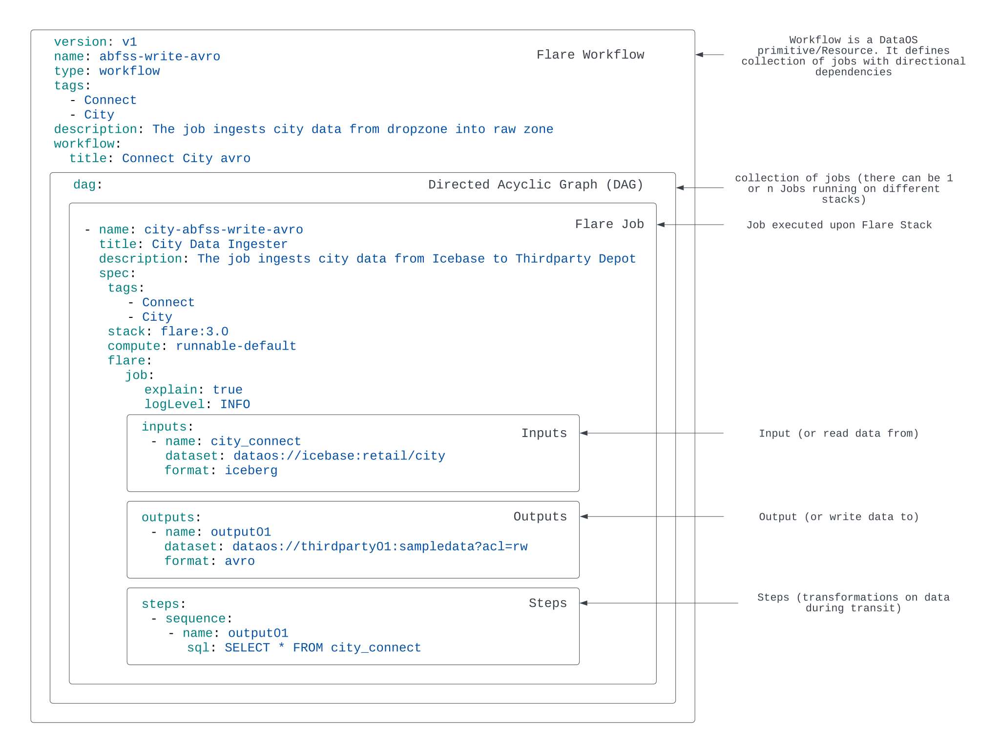

Creating Jobs upon Flare Stack¶
Flare Workflow¶
DataOS uses Flare workflows to carry out large-scale data transformation, ingestion, profiling, syndication, and even a combination of these tasks.

Flare is a declarative stack that can process large-scale data processing workflows using sequential YAML. On the other hand, a workflow is a primitive/Resource within DataOS that runs a sequence of jobs in a specific order. A workflow is a DAG (Directed Acyclic Graph) of jobs. To learn more about workflows, click here.
Deep Diving into a Flare Job¶
A Job is a generalized way of defining a transformation task based on the scenario and use case; it requires the assistance of stacks to achieve the desired outcome. Any job is fully reliant on the completion of the job before it. E.g. A Flare Job represents a data processing workload which could be ingestion, transformation, profiling, syndication, etc., running on Flare stack, while in scenarios when the output dataset is to be stored in the Icebase depot, you also need the Toolbox stack along with the Flare Stack. If you would like to learn more about the Toolbox stack, click here.
In terms of YAML structure how a Flare Job is declared within the DAG, it comprises three sections: The Input (read data from), the Output (write data to), and the Steps (transformation of data during transit).

In order to grasp the intricacies of creating a Flare Job and the process of testing and deploying it, we shall explore a specific example of Data Ingestion. The data ingestion process will involve acquiring batch data in CSV format from an external source, applying various transformations on top of it, and ultimately storing the data within DataOS internal storage, Icebase.
However, before delving into the technical aspects of this task, it is vital to ensure that certain prerequisites have been met to ensure a smooth and successful execution.
Prerequisites¶
Check whether DataOS CLI (Command Line Interface) is Installed¶
Before proceeding, verify that the DataOS CLI is installed on your system. If it is, proceed to the next step. If not, use the provided link to install the CLI.
Check Required Permissions to Run the Flare Workflow¶
Before proceeding to run a Flare Workflow, kindly ensure that you have the necessary permissions. To execute the Flare Workflow through the CLI, you must possess the roles:id:data-dev, roles:id:depot-manager, roles:id:depot-reader, and roles:id:user tags.
If you don’t have the required permissions, you will get the
Forbidden Errormessage.
Use the command below to check your permission tags. Make sure that you are logged in to DataOS CLI before running the above command.
dataos-ctl user get
#This is the output you will get
INFO[0000] 😃 user get... # we hope u keep smiling
INFO[0000] 😃 user get...complete
NAME | ID | TYPE | EMAIL | TAGS
---------------|-------------|--------|----------------------|---------------------------------
IamGroot | iamgroot | person | iamgroot@tmdc.io | roles:direct:collated,
| | | | **roles:id:data-dev**,
| | | | **roles:id:depot-manager**,
| | | | **roles:id:depot-reader**,
| | | | roles:id:system-dev,
| | | | **roles:id:user**,
| | | | users:id:iamgroot
Note: In case of unavailability of required tags, contact the administrator within your organization with Operator-level permissions or dataos:u:operator tag to add the required tags for running your workflow.
Check the required depot¶
To run a Flare Workflow, you need depots addressing both source and sink systems to read and write data. If you already have a depot created you can proceed to the next step. You can take help from the Metis to explore the datasets within various depots.
To get the list of depots, created by all the DataOS users, run the below command in the CLI
To check the output, click the toggle button
Output (with your job highlighted in bold)INFO[0000] 🔍 get...
INFO[0000] 🔍 get...complete
NAME | VERSION | TYPE | WORKSPACE | STATUS | RUNTIME | OWNER
-----------------|---------|-------|-----------|---------|-----------|--------------------------
azureblob | v1 | depot | | pending | running:1 | user01
blender | v1 | depot | | active | | dataos-resource-manager
crmbq | v1 | depot | | active | | user02
customer | v1 | depot | | active | running:1 | user02
distribution | v1 | depot | | active | | user02
dropzone01 | v1 | depot | | active | running:1 | dataos-resource-manager
fastbase | v1 | depot | | active | | dataos-resource-manager
filebase | v1 | depot | | active | running:1 | dataos-resource-manager
gateway | v1 | depot | | active | | dataos-resource-manager
**icebase** | v1 | depot | | active | running:1 | dataos-resource-manager
manufacturing | v1 | depot | | active | | user02
metisdb | v1 | depot | | active | | dataos-resource-manager
poss3 | v1 | depot | | active | running:1 | user02
primeorgbucket | v1 | depot | | active | running:1 | dataos-resource-manager
product | v1 | depot | | active | running:1 | user02
publicstreams | v1 | depot | | active | | dataos-resource-manager
redshift | v1 | depot | | active | | user03
retail | v1 | depot | | active | running:1 | user02
snowflake01 | v1 | depot | | active | | user02
snrksh | v1 | depot | | active | | user04
syndicate01 | v1 | depot | | active | running:1 | dataos-resource-manager
systemstreams | v1 | depot | | active | | dataos-resource-manager
**thirdparty01 | v1** **| depot | | active | running:1 | dataos-resource-manager**
transportation | v1 | depot | | active | running:1 | user02
yakdevbq | v1 | depot | | active | | user02
In case you don’t have the required depot in the list, you can create a YAML configuration file for a depot and apply it through CLI. To know more about creating a depot click on the below link
Check the type of workload you wanna run¶
A workload can either be a Batch or Streaming workload. For a batch workload, you can submit one workflow with you have two options either submit a workflow that contains a job on both Flare and Toolbox Stack respectively both the Flare and Toolbox jobs one after the other in a DAG or submit two separate workflows one containing the DAG of Flare jobs and another containing the DAG of the Toolbox job.
While for a streaming workload, you need to create two separate workflows one for DAG of Flare Jobs and another for DAG of Toolbox job. In the below use case, we will take a batch workload.
Check the size of the data¶
For small and medium-sized data it's best to stick to the default configurations, but if you wanna do some heavy lifting by running some hundred Gigabyte and even Terabyte-sized workloads you need to alter the configuration and optimize the job according to that. To know more about optimization click the below link
Getting started with Flare Job¶
Excited to run the workflow for Flare Job, without further ado let’s get right into it.
Create a YAML file¶
To define a workflow for the Flare job you want to run, you must provide various configuration values in the key-value pairs in the YAML file. Before creating the YAML, you need to get the UDL of the input and output depots. For this case scenario
- Input
dataset-dataos://thirdparty01:none/cityformat-CSV
- Output:
dataos://icebase:retailsample
This example requires two depots (thirdparty01 and icebase) to connect with the source and sink to perform the reading and writing of data.
version: v1
name: cnt-city-demo-001
type: workflow
tags:
- Connect 2342
- CONNECT
description: The job ingests city data from dropzone into raw zone
workflow: # Workflow
title: Connect City
dag: # DAG (Directed Acyclic Graph)
- name: wf-sample-job-001 # Job 1
title: City Dimension Ingester
description: The job ingests city data from dropzone into raw zone
spec:
tags:
- Connect
- City
stack: flare:3.0 # Stack is Flare, so its Flare Job
compute: runnable-default
flare:
job:
explain: true
logLevel: INFO
# Inputs
inputs:
- name: city_connect
dataset: dataos://thirdparty01:none/city
format: csv
schemaPath: dataos://thirdparty01:none/schemas/avsc/city.avsc
# Outputs
outputs:
- name: cities
dataset: dataos://icebase:retailsample/city?acl=rw
format: Iceberg
description: City data ingested from external csv
options:
saveMode: append
sort:
mode: partition
columns:
- name: version
order: desc
iceberg:
properties:
write.format.default: parquet
write.metadata.compression-codec: gzip
partitionSpec:
- type: identity
column: version
# Steps
steps:
- sequence:
- name: cities
doc: Pick all columns from cities and add version as yyyyMMddHHmm formatted
timestamp.
sql: |
SELECT
*,
date_format (now(), 'yyyyMMddHHmm') AS version,
now() AS ts_city
FROM
city_connect
Save the YAML and copy its path. Path could be either relative or absolute.
To know more about the various Flare Stack YAML configurations, click here.
Validate the YAML¶
Before running the workflow, ensure the validity of the YAML using the Linter command. The Linter command will check for correct syntax, indentation, naming convention, etc. To know more about the aspects verified by the Linter command -
In case you encounter errors, check out the below link
To use the linter command use the lint -l flag with the apply command.
Sample
If there are no errors in the YAML config file, click the toggle to check the output
INFO[0000] 🛠 apply...
INFO[0000] 🔧 applying(public) cnt-city-demo-001:v1beta1:workflow...
---
# cnt-city-demo-001:v1beta1:workflow
name: cnt-city-demo-001
version: v1
type: workflow
tags:
- Connect
- City
description: The job ingests city data from Third party into DataOS
workflow:
title: Connect City
dag:
- name: city-001
description: The job ingests city data from Third party into DataOS
title: City Dimension Ingester
spec:
tags:
- Connect
- City
stack: flare:3.0
flare:
job:
explain: true
inputs:
- dataset: dataos://thirdparty01:none/city
format: csv
name: city_connect
schemaPath: dataos://thirdparty01:none/schemas/avsc/city.avsc
logLevel: INFO
outputs:
- depot: dataos://icebase:retailsample?acl=rw
name: output01
steps:
- sequence:
- name: cities
sql: select * from city_connect
sink:
- datasetName: city
description: City data ingested from external csv
outputName: output01
outputOptions:
iceberg:
partitionSpec:
- column: state_name
type: identity
properties:
write.format.default: parquet
write.metadata.compression-codec: gzip
saveMode: overwrite
outputType: Iceberg
sequenceName: cities
tags:
- Connect
- City
title: City Source Data
INFO[0001] 🔧 applying cnt-city-demo-001:v1beta1:workflow...valid
INFO[0001] 🛠 apply(public)...lint
INFO[0001] 🛠 apply...nothing
Testing the YAML on Flare Standalone¶
In spite of validating the YAML, there is a chance that the Flare job will fail in production which will result in a loss of both computing resources and time. To avoid such unforeseeable situations its the best practice to test the Flare job in the Flare Standalone before deploying it into production.
Testing the Flare job on Flare Standalone
Applying the YAML¶
Use the apply command to create a workflow from the given YAML file.
Output
INFO[0000] 🛠 apply...
INFO[0000] 🔧 applying(public) cnt-city-demo-001:v1beta1:workflow...
INFO[0002] 🔧 applying(public) cnt-city-demo-001:v1beta1:workflow...created
INFO[0002] 🛠 apply...complete
Create Your Workspace (Optional)
This is an optional step. By default, you can always run your Flare workflow
s in public workspace, but if you wanna create a new workspace for some specific workflows, execute the below command.
Monitoring Workflow¶
Get Status of the Workflow¶
Created by you
Use the get command for the workflow information on CLI. This command will list the workflows created by you. You can check this information for all the users by adding -a flag to the command.
Output
INFO[0000] 🔍 get...
INFO[0001] 🔍 get...complete
NAME | VERSION | TYPE | WORKSPACE | STATUS | RUNTIME | OWNER
--------------------|---------|----------|-----------|--------|---------|-------------
cnt-city-demo-001 | v1 | workflow | public | active | running | tmdc
Created by everyone
Output
INFO[0000] 🔍 get...
INFO[0001] 🔍 get...complete
NAME | VERSION | TYPE | WORKSPACE | STATUS | RUNTIME | OWNER
-------------------------------------|---------|----------|-----------|--------|-----------|--------------------
checks-sports-data | v1 | workflow | public | active | succeeded | user01
cnt-city-demo-001 | v1 | workflow | public | active | running | tmdc
cnt-city-demo-001-01 | v1 | workflow | public | active | succeeded | otheruser
cnt-city-demo-01001 | v1 | workflow | public | active | succeeded | user03
Get Runtime Information¶
Get the Runtime status of the workflow, using the below command
Command
Example
Alternative method:
You can pass the information as a string from the output of the get command as highlighted in red in the below command
dataos-ctl -t workflow -w public get
# the output is shown below
NAME | VERSION | TYPE | WORKSPACE | STATUS | RUNTIME | OWNER
--------------------|---------|----------|-----------|--------|---------|-------------
**cnt-city-demo-001 | v1 | workflow | public** | active | running | tmdc
Select from Name to workspace, for example cnt-city-demo-001 | v1 | workflow | public
Output
INFO[0000] 🔍 workflow...
INFO[0001] 🔍 workflow...complete
NAME | VERSION | TYPE | WORKSPACE | TITLE | OWNER
--------------------|---------|----------|-----------|--------------|-------------
cnt-city-demo-001 | v1 | workflow | public | Connect City | tmdc
JOB NAME | STACK | JOB TITLE | JOB DEPENDENCIES
-----------|------------|-------------------------|-------------------
city-001 | flare:3.0 | City Dimension Ingester |
system | dataos_cli | System Runnable Steps |
RUNTIME | PROGRESS | STARTED | FINISHED
----------|----------|---------------------------|----------------------------
failed | 6/6 | 2022-06-24T17:11:55+05:30 | 2022-06-24T17:13:23+05:30
NODE NAME | JOB NAME | POD NAME | TYPE | CONTAINERS | PHASE
--------------------------------------|----------|-----------------------------------|--------------|-------------------------|------------
city-001-bubble-failure-rnnbl | city-001 | cnt-city-demo-001-c5dq-2803083439 | pod-workflow | wait,main | failed
city-001-c5dq-0624114155-driver | city-001 | city-001-c5dq-0624114155-driver | pod-flare | spark-kubernetes-driver | failed
city-001-execute | city-001 | cnt-city-demo-001-c5dq-3254930726 | pod-workflow | main | failed
city-001-failure-rnnbl | city-001 | cnt-city-demo-001-c5dq-3875756933 | pod-workflow | wait,main | succeeded
city-001-start-rnnbl | city-001 | cnt-city-demo-001-c5dq-843482008 | pod-workflow | wait,main | succeeded
cnt-city-demo-001-run-failure-rnnbl | system | cnt-city-demo-001-c5dq-620000540 | pod-workflow | wait,main | succeeded
cnt-city-demo-001-start-rnnbl | system | cnt-city-demo-001-c5dq-169925113 | pod-workflow | wait,main | succeeded
Get runtime refresh¶
You can see the updates for the workflow progress.
Output
INFO[0000] 🔍 workflow...
INFO[0001] 🔍 workflow...complete
NAME | VERSION | TYPE | WORKSPACE | TITLE | OWNER
--------------------|---------|----------|-----------|--------------|-------------
cnt-city-demo-001 | v1beta1 | workflow | public | Connect City | mebinmoncy
JOB NAME | STACK | JOB TITLE | JOB DEPENDENCIES
-----------|------------|-------------------------|-------------------
city-001 | flare:2.0 | City Dimension Ingester |
system | dataos_cli | System Runnable Steps |
RUNTIME | PROGRESS | STARTED | FINISHED
----------|----------|---------------------------|----------------------------
failed | 6/6 | 2022-06-24T17:11:55+05:30 | 2022-06-24T17:13:23+05:30
NODE NAME | JOB NAME | POD NAME | TYPE | CONTAINERS | PHASE
--------------------------------------|----------|-----------------------------------|--------------|-------------------------|------------
city-001-bubble-failure-rnnbl | city-001 | cnt-city-demo-001-c5dq-2803083439 | pod-workflow | wait,main | failed
city-001-c5dq-0624114155-driver | city-001 | city-001-c5dq-0624114155-driver | pod-flare | spark-kubernetes-driver | failed
city-001-execute | city-001 | cnt-city-demo-001-c5dq-3254930726 | pod-workflow | main | failed
city-001-failure-rnnbl | city-001 | cnt-city-demo-001-c5dq-3875756933 | pod-workflow | wait,main | succeeded
city-001-start-rnnbl | city-001 | cnt-city-demo-001-c5dq-843482008 | pod-workflow | wait,main | succeeded
cnt-city-demo-001-run-failure-rnnbl | system | cnt-city-demo-001-c5dq-620000540 | pod-workflow | wait,main | succeeded
cnt-city-demo-001-start-rnnbl | system | cnt-city-demo-001-c5dq-169925113 | pod-workflow | wait,main | succeeded
Press Ctrl + C to Exit.
Troubleshoot Errors¶
Check Logs for Errors¶
Run the same workflow again with the same specifications
Check the logs using the following command. You can run the runtime command to get the names of nodes that failed
dataos-ctl -i "<copy the name-to-workspace in the output table from get status command" --node <failed-node-name-from-get-runtime-command> log
Example
dataos-ctl -i " cnt-city-demo-001 | v1 | workflow | public" --node city-001-c5dq-0624114155-driver log
Output
INFO[0000] 📃 log(public)...
INFO[0001] 📃 log(public)...complete
NODE NAME | CONTAINER NAME | ERROR
----------------------------------|-------------------------|--------
city-001-c5dq-0624114155-driver | spark-kubernetes-driver |
-------------------LOGS-------------------
++ id -u
+ myuid=0
++ id -g
+ mygid=0
+ set +e
++ getent passwd 0
+ uidentry=root:x:0:0:root:/root:/bin/bash
+ set -e
+ '[' -z root:x:0:0:root:/root:/bin/bash ']'
+ SPARK_CLASSPATH=':/opt/spark/jars/*'
+ env
+ grep SPARK_JAVA_OPT_
+ sort -t_ -k4 -n
+ sed 's/[^=]*=\(.*\)/\1/g'
+ readarray -t SPARK_EXECUTOR_JAVA_OPTS
+ '[' -n '' ']'
+ '[' -z ']'
+ '[' -z ']'
+ '[' -n '' ']'
+ '[' -z ']'
+ '[' -z x ']'
+ SPARK_CLASSPATH='/opt/spark/conf::/opt/spark/jars/*'
+ case "$1" in
+ shift 1
+ CMD=("$SPARK_HOME/bin/spark-submit" --conf "spark.driver.bindAddress=$SPARK_DRIVER_BIND_ADDRESS" --deploy-mode client "$@")
+ exec /usr/bin/tini -s -- /opt/spark/bin/spark-submit --conf spark.driver.bindAddress=10.212.6.129 --deploy-mode client --properties-file /opt/spark/conf/spark.properties --class io.dataos.flare.Flare local:///opt/spark/jars/flare.jar -c /etc/dataos/config/jobconfig.yaml
2022-06-24 11:42:37,146 WARN [main] o.a.h.u.NativeCodeLoader: Unable to load native-hadoop library for your platform... using builtin-java classes where applicable
build version: 5.9.16-dev; workspace name: public; workflow name: cnt-city-demo-001; workflow run id: 761eea3b-693b-4863-a83d-9382aa078ad1; run as user: mebinmoncy; job name: city-001; job run id: 03b60c0e-ea75-4d08-84e1-cd0ff2138a4e;
found configuration: Map(explain -> true, appName -> city-001, outputs -> List(Map(depot -> dataos://icebase:retailsample?acl=rw, name -> output01)), inputs -> List(Map(dataset -> dataos://thirdparty01:none/city, format -> csv, name -> city_connect, schemaPath -> dataos://thirdparty01:none/schemas/avsc/city.avsc)), steps -> List(/etc/dataos/config/step-0.yaml), logLevel -> INFO)
22/06/24 11:42:41 INFO Flare$: context is io.dataos.flare.contexts.ProcessingContext@49f40c00
22/06/24 11:42:41 ERROR Flare$: =>Flare: Job finished with error build version: 5.9.16-dev; workspace name: public; workflow name: cnt-city-demo-001; workflow run id: 761eea3b-693b-4863-a83d-9382aa078ad1; run as user: mebinmoncy; job name: city-001; job run id: 03b60c0e-ea75-4d08-84e1-cd0ff2138a4e;
io.dataos.flare.exceptions.FlareInvalidConfigException: Could not alter output datasets for workspace: public, job: city-001. There is an existing job with same workspace: public and name: city-001 writing into below datasets
1. dataos://aswathama:retail/city
You should use a different job name for your job as you cannot change output datasets for any job.
at io.dataos.flare.configurations.mapper.StepConfigMapper$.$anonfun$validateSinkWithPreviousJob$3(StepConfigMapper.scala:180)
at io.dataos.flare.configurations.mapper.StepConfigMapper$.$anonfun$validateSinkWithPreviousJob$3$adapted(StepConfigMapper.scala:178)
at scala.collection.immutable.List.foreach(List.scala:431)
at scala.collection.generic.TraversableForwarder.foreach(TraversableForwarder.scala:38)
at scala.collection.generic.TraversableForwarder.foreach$(TraversableForwarder.scala:38)
at scala.collection.mutable.ListBuffer.foreach(ListBuffer.scala:47)
at io.dataos.flare.configurations.mapper.StepConfigMapper$.validateSinkWithPreviousJob(StepConfigMapper.scala:178)
at io.dataos.flare.configurations.mapper.StepConfigMapper$.validate(StepConfigMapper.scala:38)
at io.dataos.flare.contexts.ProcessingContext.setup(ProcessingContext.scala:37)
at io.dataos.flare.Flare$.main(Flare.scala:61)
at io.dataos.flare.Flare.main(Flare.scala)
at sun.reflect.NativeMethodAccessorImpl.invoke0(Native Method)
at sun.reflect.NativeMethodAccessorImpl.invoke(NativeMethodAccessorImpl.java:62)
at sun.reflect.DelegatingMethodAccessorImpl.invoke(DelegatingMethodAccessorImpl.java:43)
at java.lang.reflect.Method.invoke(Method.java:498)
at org.apache.spark.deploy.JavaMainApplication.start(SparkApplication.scala:52)
at org.apache.spark.deploy.SparkSubmit.org$apache$spark$deploy$SparkSubmit$$runMain(SparkSubmit.scala:958)
at org.apache.spark.deploy.SparkSubmit.doRunMain$1(SparkSubmit.scala:183)
at org.apache.spark.deploy.SparkSubmit.submit(SparkSubmit.scala:206)
at org.apache.spark.deploy.SparkSubmit.doSubmit(SparkSubmit.scala:90)
at org.apache.spark.deploy.SparkSubmit$$anon$2.doSubmit(SparkSubmit.scala:1046)
at org.apache.spark.deploy.SparkSubmit$.main(SparkSubmit.scala:1055)
at org.apache.spark.deploy.SparkSubmit.main(SparkSubmit.scala)
Exception in thread "main" io.dataos.flare.exceptions.FlareInvalidConfigException: Could not alter output datasets for workspace: public, job: city-001. There is an existing job with same workspace: public and name: city-001 writing into below datasets
1. dataos://aswathama:retail/city
You should use a different job name for your job as you cannot change output datasets for any job.
22/06/24 11:42:42 INFO Flare$: Gracefully stopping Spark Application
22/06/24 11:42:42 **ERROR** ProcessingContext: =>Flare: Job finished with error=Could not alter output datasets for workspace: public, job: city-001. **There is an existing job with same workspace**: public and name: city-001 writing into below datasets
1. dataos://aswathama:retail/city
**You should use a different job name for your job as you cannot change output datasets for any job.**
Exception in thread "shutdownHook1" io.dataos.flare.exceptions.FlareException: Could not alter output datasets for workspace: public, job: city-001. There is an existing job with same workspace: public and name: city-001 writing into below datasets
1. dataos://aswathama:retail/city
You should use a different job name for your job as you cannot change output datasets for any job.
at io.dataos.flare.contexts.ProcessingContext.error(ProcessingContext.scala:87)
at io.dataos.flare.Flare$.$anonfun$addShutdownHook$1(Flare.scala:84)
at scala.sys.ShutdownHookThread$$anon$1.run(ShutdownHookThread.scala:37)
2022-06-24 11:42:42,456 INFO [shutdown-hook-0] o.a.s.u.ShutdownHookManager: Shutdown hook called
2022-06-24 11:42:42,457 INFO [shutdown-hook-0] o.a.s.u.ShutdownHookManager: Deleting directory /tmp/spark-bb4892c9-0236-4569-97c7-0b610e82ff52
You will notice the error “There is an existing job with the same workspace. You should use a different job name for your job as you cannot change output datasets for any job.”
Fix the Errors¶
Modify the YAML by changing the name of the workflow. For this example, it is renamed as cnt-city-demo-999 from cnt-city-demo-001
Delete the Workflows¶
Now before you rerun the workflow, you need to delete the previous version of this workflow from the environment. You can delete the workflow in two ways as shown below.
Method 1: Select the name to workspace from get command output and copy it as a string as shown below
Command
Example
dataos-ctl -i " cnt-city-demo-001 | v1 | workflow | public" delete
# this is the output
INFO[0000] 🗑 delete...
INFO[0001] 🗑 deleting(public) cnt-city-demo-001:v1beta1:workflow...
INFO[0003] 🗑 deleting(public) cnt-city-demo-001:v1beta1:workflow...deleted
INFO[0003] 🗑 delete...complete
Method 2: Select the path of the YAML file and use the delete Command
Command
Example
dataos-ctl delete -f /home/desktop/flare/connect-city/config_v2beta1.yaml
# this is the output
INFO[0000] 🗑 delete...
INFO[0000] 🗑 deleting(public) cnt-city-demo-010:v1beta1:workflow...
INFO[0001] 🗑 deleting(public) cnt-city-demo-010:v1beta1:workflow...deleted
INFO[0001] 🗑 delete...complete
Method 3:
Command
Example
dataos-ctl -w public -t workflow -n cnt-city-demo-001 delete
# this is the output
INFO[0000] 🗑 delete...
INFO[0000] 🗑 deleting(public) cnt-city-demo-010:v1beta1:workflow...
INFO[0001] 🗑 deleting(public) cnt-city-demo-010:v1beta1:workflow...deleted
INFO[0001] 🗑 delete...complete
Rerun the Workflow¶
Run the workflow again using apply command. Check the Runtime for its success. Scroll to the right to see the status as shown in the previous steps.
Command
dataos-ctl -i "copy the name-to-workspace in the output table from get status command" get runtime -r
Example
Output
INFO[0000] 🔍 workflow...
INFO[0002] 🔍 workflow...complete
NAME | VERSION | TYPE | WORKSPACE | TITLE | OWNER
--------------------|---------|----------|-----------|--------------|-------------
cnt-city-demo-999 | v1beta1 | workflow | public | Connect City | mebinmoncy
JOB NAME | STACK | JOB TITLE | JOB DEPENDENCIES
-----------|------------|-------------------------|-------------------
city-999 | flare:2.0 | City Dimension Ingester |
system | dataos_cli | System Runnable Steps |
RUNTIME | PROGRESS | STARTED | FINISHED
------------|----------|---------------------------|----------------------------
succeeded | 5/5 | 2022-06-24T17:29:37+05:30 | 2022-06-24T17:31:50+05:30
NODE NAME | JOB NAME | POD NAME | TYPE | CONTAINERS | PHASE
--------------------------------------|----------|-----------------------------------|--------------|-------------------------|------------
city-999-execute | city-999 | cnt-city-demo-999-lork-1125088085 | pod-workflow | main | succeeded
city-999-lork-0624115937-driver | city-999 | city-999-lork-0624115937-driver | pod-flare | spark-kubernetes-driver | completed
city-999-start-rnnbl | city-999 | cnt-city-demo-999-lork-1790287599 | pod-workflow | wait,main | succeeded
city-999-success-rnnbl | city-999 | cnt-city-demo-999-lork-2939697963 | pod-workflow | wait,main | succeeded
cnt-city-demo-999-run-success-rnnbl | system | cnt-city-demo-999-lork-2544494600 | pod-workflow | wait,main | succeeded
cnt-city-demo-999-start-rnnbl | system | cnt-city-demo-999-lork-2374735668 | pod-workflow | wait,main | succeeded
Metadata Registration¶
Only for Depots with Hadoop Catalog
Run Data Toolbox Workflow¶
Data Toolbox plays the role of registering the metadata of ingested data within Icebase with the DataOS Metis. You need to run the following Data tool YAML for your workflow to record the metadata. Use the apply command to run the workflow and check its runtime status. The stack here is toolbox
Sample YAML
version: v1
name: dataos-tool-city-test
type: workflow
workflow:
dag:
- name: data-tool-job-001 # Job 2
spec:
stack: toolbox # Stack is Toolbox, so its a Toolbox Job
compute: runnable-default
toolbox:
dataset: dataos://icebase:retailsample/city?acl=rw
action:
name: set_version
value: latest
Alternative Method
You can also use the set-metadata Icebase command for Metadata Registration and configuring the metadata version
dataos-ctl dataset -a dataos://icebase:retailsample/city set-metadata -v <latest|v2.gz.metadata.json>
To know more about the Icebase approach click the link.
Check Registered Dataset with Metis¶
Check the registered dataset on the Metis UI.
You have just run your first Flare Workflow and successfully ingested a dataset within the Icebase. We have also checked it on the Datanet. Once we are done with the ingestion and transformation, we can start querying the data using the Workbench and build analytics Dashboard.
But wait! The work doesn’t end here
Delete the Workflow
It’s always good to clean your desk, after getting the work done. You should delete the workflow from the environment after your job is successfully run. The workflow, otherwise, will keep floating in the environment for three days.
First, list the workflows.
Output
INFO[0000] 🔍 get...
INFO[0001] 🔍 get...complete
NAME | VERSION | TYPE | WORKSPACE | STATUS | RUNTIME | OWNER
------------------------|---------|----------|-----------|--------|-----------|-----------
cnt-city-demo-999 | v1 | workflow | public | active | succeeded | tmdc
dataos-tool-city-test | v1 | workflow | public | active | succeeded | tmdc
And then delete using the below command
Output